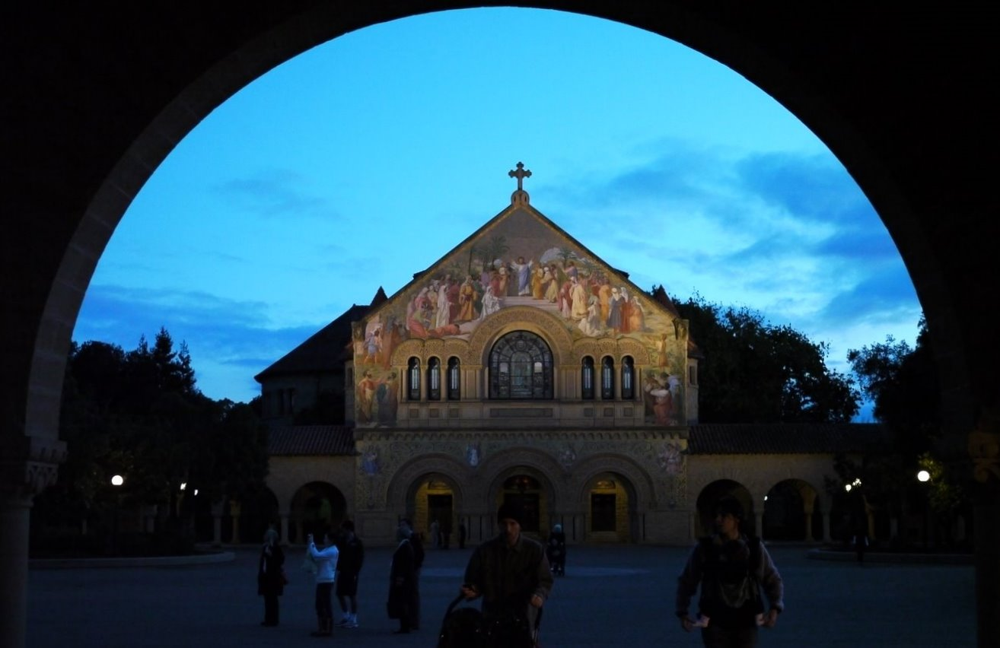

Stanford Symphonic Chorus
{kind=link}
Events
{kind=link}
25Sep
2017
First rehearsal: Elgar The Music Makers
7:30 p.m. Campbell Recital Hall; registration starts at 6:30
17Nov
2017
Symphonic Chorus Performance: Elgar's The Music Makers with the Peninsula Symphony Orchestra
7:30pm Bing Concert Hall
19Nov
2017
Symphonic Chorus Performance: Elgar's The Music Makers with the Peninsula Symphony Orchestra
2:30pm Bing Concert Hall
15Dec
2017
Messiah Sing/Play Along
7:30 p.m. Memorial Church
Welcome
The Chorus
{kind=link}
The Stanford Symphonic Chorus is a group of approximately 180 students, faculty, staff, and members of the community led by Director of Music and Conductor Stephen Sano. The Chorus generally performs three works a year, one each academic quarter. Each performance typically features a large choral work, and includes other choral or instrumental pieces. See our Performances page for information about past performances.
Fall 2017 Concert
The Stanford Symphonic Chorus presents Edward Elgar's The Music Makers in collaboration with the Peninsula Symphony and mezzo-soprano Wendy Hillhouse. The program also features Ralph Vaughan Williams's beloved Fantasia on a Theme of Thomas Tallis and Norfolk Rhapsody No. 1, alongside the English hymn and folk melodies that inspired both works.
Performances at Stanford University's Bing Concert Hall on Friday, 17 November and Sunday, 19 November.
Helpful links

Symphonic Chorus